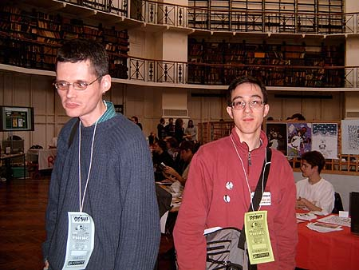
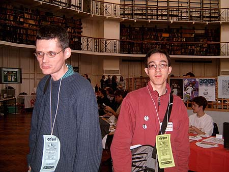

UK Web Comix Thing—Jeremy Dennis
Gavin Burrows at The UK Web and Minicomix thing, London, 2004-02-20

09deepjoy
Gavin Burrows,
David Goodman.
The joy of small press comics shopping.

09deepjoy
Gavin Burrows,
David Goodman.
The joy of small press comics shopping.